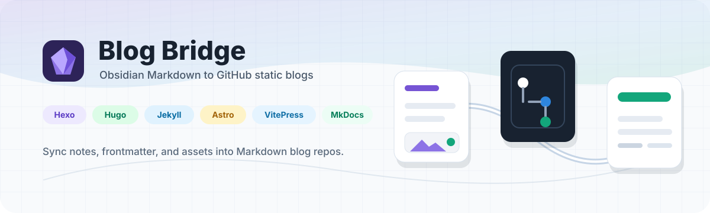
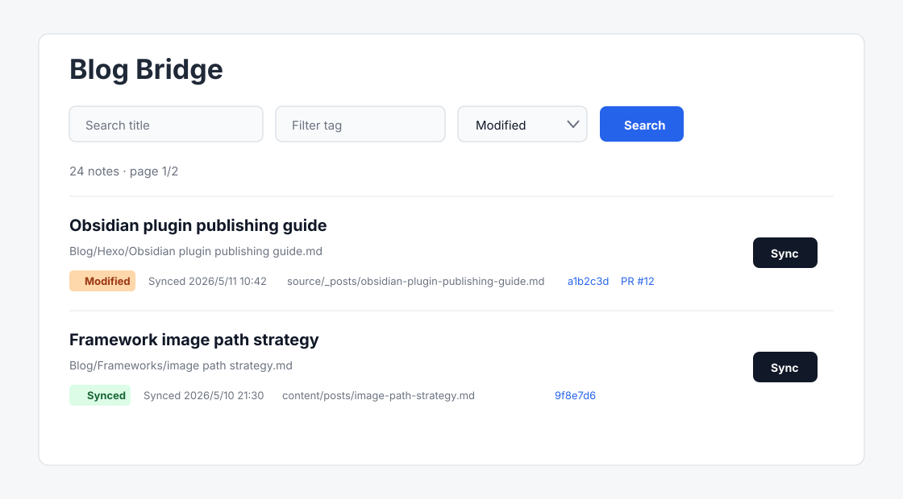

Obsidian desktop plugin
Your notes already know how to become a blog.
Blog Bridge syncs selected Markdown notes to GitHub-backed static sites with frontmatter and local images intact.
Manual sync
Local images
GitHub commits

One deliberate workflow
From vault to repository, without leaving Markdown.
Keep writing in Obsidian. Choose the note. Let Blog Bridge generate the post path, assets, commit, and optional PR.
Obsidian
Markdown note
Blog Bridge
Frontmatter, slug, images
GitHub
Commit or PR
Built for real static sites
Presets for the blog stack you already use.
Hexo
Hugo
Jekyll
Astro
VitePress
MkDocs
Framework pathsPost and image directories follow each preset.
Clean frontmatterPreserve existing metadata and fill only what is missing.
Local image commitsMarkdown and referenced assets travel in the same commit.
Direct or PR modePublish straight to branch or review with a pull request.


Status you can trust
See what changed. Sync only what is ready.
Filter by title, tag, or sync status. Batch selected notes sequentially, then jump to the commit or PR.
Blog Bridge for Obsidian